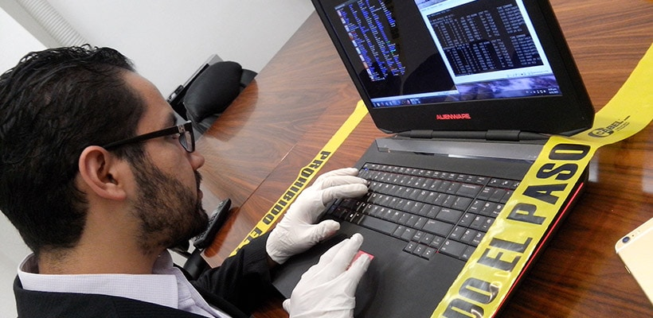

Peritar VS Auditar
Peritar
Juzgar o evaluar una cosa en calidad de perito. Realizar un perito un informe técnico. Evaluar, analizar o estudiar un asunto en calidad de perito o especialista
Auditar
En el ámbito económico, auditar supone evaluar y medir en profundidad las características de una organización con el fin de mostrar sus debilidades y fortalezas teniendo en cuenta una serie de factores, como son la eficiencia y la rentabilidad. Auditar significa la acción de analizar de manera exhaustiva y pormenorizada distintas características de una empresa o una institución en particular. Y más allá, ya que las condiciones de medición deben basarse en criterios establecidos previamente. En la economía cotidiana, la labor de auditar cuenta con distintas metodologías teniendo en cuenta el ámbito de estudio o actuación que se asuma. En todas ellas se ponen en valor estrategias y procesos emprendidos por el ente a auditar.
Consultor
Es el profesional encargado de realizar un análisis exhaustivo del mercado. El objetivo es ubicar los puntos de mejora y crear un plan de acción estratégico que te permita conseguir resultados tangibles. Deberá analizarse un problema concreto con el fin de conseguir la solución adecuada.
Auditor
En el ámbito económico, auditar supone evaluar y medir en profundidad las características de una organización con el fin de mostrar sus debilidades y fortalezas teniendo en cuenta una serie de factores, como son la eficiencia y la rentabilidad. Auditar significa la acción de analizar de manera exhaustiva y pormenorizada distintas características de una empresa o una institución en particular. Y más allá, ya que las condiciones de medición deben basarse en criterios establecidos previamente. En la economía cotidiana, la labor de auditar cuenta con distintas metodologías teniendo en cuenta el ámbito de estudio o actuación que se asuma. En todas ellas se ponen en valor estrategias y procesos emprendidos por el ente a auditar.
Perito
Un perito es un profesional o experto en determinada materia, quien con sus conocimientos proporciona información a los administradores de justicia para la resolución de los procesos judiciales.
Requisitos que debe tener un perito:
• Tener un título que le permita desempeñar las funciones de perito contable.
• Suelen estar colegiados.
• Poseen amplios conocimientos de contabilidad.
• Conocimiento de las normas sobre los códigos éticos de su profesión.
• Conocer la legislación vigente: Normativa contable y financiera, leyes penales, procedimientos de auditoría.
• No tener antecedentes penales.

Definición conceptual de perito
Del latín perītus, un perito es una persona experimentada, hábil o entendida en una ciencia o arte. El perito es el experto en una determinada materia que, gracias a sus conocimientos, actúa como fuente de consulta para la resolución de conflictos.
Del latín perītus, un perito es una persona experimentada, hábil o entendida en una ciencia o arte. El perito es el experto en una determinada materia que, gracias a sus conocimientos, actúa como fuente de consulta para la resolución de conflictos.
En un juicio, pueden encontrarse peritos judiciales (que son nombrados por el juez) y peritos de parte (propuestos por los involucrados). Estos peritos aportan sus conocimientos especializados sobre los asuntos en litigio.
El perito cuenta con estudios superiores y suministra información fundada bajo juramento. Esto quiere decir que el perito no realiza suposiciones o brinda su opinión, sino que explica una situación confusa o compleja de acuerdo a sus estudios. De esta manera, el juez recibe información que le aporta razones o argumentos a la hora de dictar su fallo.
Perito VS especialista
Un perito es aquel experto en un tema objeto de análisis pericial. Un especialista es un profesional capacitado para elaborar un informe pericial, objeto por el cuál sea requerido.
Formación Perito (IT)
La formación es la base intelectual en la que se sustenta el conocimiento y la experiencia adquirida, proporcionando al individuo el nivel cognitivo necesario para que pueda aportar valor añadido en base a la capacidad de análisis, crítica, comprensión, respuesta y reacción, para desempeñar un buen trabajo, de calidad, con garantía, responsabilidad y profesionalidad, para satisfacción propia, de sus colaboradores, sus compañeros y sus clientes.
Estudios de carrera
Tal y como señala el artículo 340 de la Ley de Enjuiciamiento Civil, “los peritos deberán poseer el título oficial que corresponda a la materia objeto del dictamen y a la naturaleza de éste. Si se tratare de materias que no estén comprendidas en títulos profesionales oficiales, habrán de ser nombrados entre personas entendidas en aquellas materias“. Por tanto, “todo perito informático debe contar de forma obligatoria con la titulación oficial correspondiente a su profesión.”.
Es decir, la normativa deja bien claro que para ejercer como perito informático oficial, es necesario tener una titulación en Ingeniería Técnica informática o Ingeniería Informática.
También está la posibilidad de realizar cursos de formación para peritaje informático. Sin embargo, estos cursos no suponen un titulación oficial, es decir, en realidad no permiten ser perito informático titulado u oficial. Es posible que los jueces no admitan a trámite las pruebas judiciales presentadas por peritos no titulados.
En cualquier caso, existen centros de formación que ofrecen este tipo de cursos. Algunos ejemplos son:
- Perito Judicial Informático en la UNIR
- Curso de Ciberseguridad y Peritaje Informático Forense de Euroinnova
- Cursos de peritaje informático en Emagister.
¿Es imprescindible estar colegiado?
No, par ejercer como perito informático ante un tribunal basta con tener la titulación requerida.
Eso sí, cada vez son más los jueces que, cuando requieren de un informe pericial informático, exigen que esté firmado por un titulado en Ingeniería o Ingeniería Técnica en Informática, y que a ser posible, esté colegiado. La razón principal es que la pertenencia a un Colegio Profesional garantiza que el perito no haya sido inhabilitado y que ejerce sus funciones en plenas facultades profesionales.
El perfil del buen perito informático
Uno de los principales requisitos es tener conocimientos avanzados de informática, y también nociones de Derecho. Los peritos informáticos tendrán que acudir a procesos judiciales y estarán en situaciones de presión, por lo que es necesario tener vocación.
Todo perito informático ha de ser consciente del esfuerzo y sacrificio que ha de realizar para ser un profesional destacado en el sector. Por ejemplo, para realizar análisis o investigaciones exhaustivas requiere de medios tecnológicos avanzados, que en muchos casos tendrá que pagarse de su propio bolsillo.
Como en cualquier empleo, los esfuerzos y sacrificios cuestan mucho más si no se disfruta del trabajo.
En constante formación
La tecnología avanza a pasos agigantados y su evolución nunca se detiene. Esto significa que los delincuentes informáticos también evolucionan sus métodos y técnicas para conseguir sus propósitos maliciosos.
Virus, malware, programas para robo de identidad, manipulación de software, descifrado de información confidencial… El perito informático debe ser un profesional en constante evolución que esté al tanto de las nuevas técnicas usadas por los ciberdelincuentes. Por ello, es aconsejable estar al tanto de las nuevas tendencias. Tanto de forma autodidacta, como acudiendo a cursos o seminarios de actualización y reciclaje, por ejemplo sobre CiberSeguridad o derecho procesal.
Informes dictámenes y peritaciones

Informes
El desarrollo con explicaciones técnicas de las circunstancias observadas en el reconocimiento o examen de la cuestión sometida a informe.
Dictámenes
La exposición de la opinión que emite el Ingeniero sobre la cuestión sometida a dictamen
Peritaciones
El dictamen en que se disciernen cuestiones de orden técnico o se definen circunstancias también del mismo orden